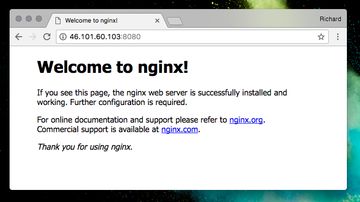

TIL: Docker can override UFW rules
Richard Taylor • • 1m readIf you’re using Ubuntu’s Uncomplicated Firewall (UFW) on your host and running services with Docker mapped ports, these services can bypass your UFW configuration.
For example, on a host 46.101.60.103 with the following UFW configuration:
Status: active
To Action From
-- ------ ----
22/tcp ALLOW Anywhere
22/tcp (v6) ALLOW Anywhere (v6)
You would think that external users can only access the SSH port. However, running a container as an unprivileged user like this:
docker run -d -p 8080:80 nginx
Results in port 8080 being accessible to the public on your host:

If you don’t intend to expose the service directly, then you can bind it to localhost in the port mapping like this:
docker run -d -p 127.0.0.1:8080:80 nginx